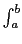

suivant: Solution approchée de y'=f(t,y)
monter: Quelques fonctions
précédent: Calcul approché du nombre
Table des matières
Index
Calcul approché d'intègrales : romberg nInt
romberg ou nInt a comme arguments : une expression
ex, le nom de la variable de cette expression (par défaut x), et
deux valeurs a,b.
romberg(ex,x,a,b) ou nInt(ex,x,a,b) calcule de
façon approchée l'intégrale
ex dx.
On tape :
romberg(exp(x^2),x,0,1)
On obtient :
1.46265174591
Documentation de giac écrite par Renée De Graeve